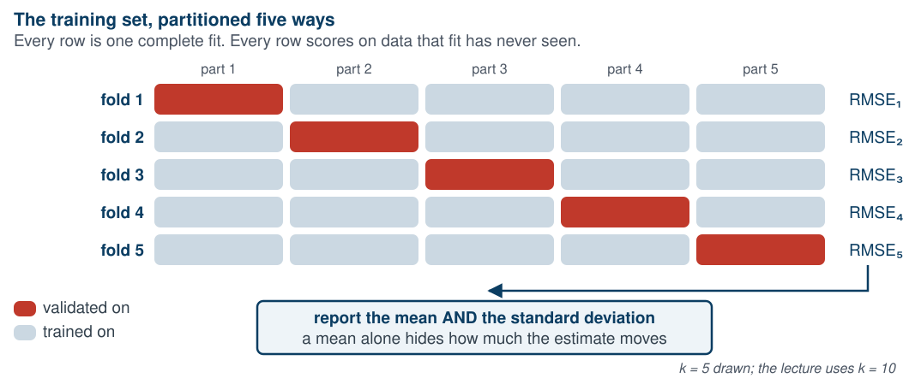
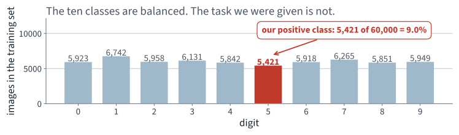
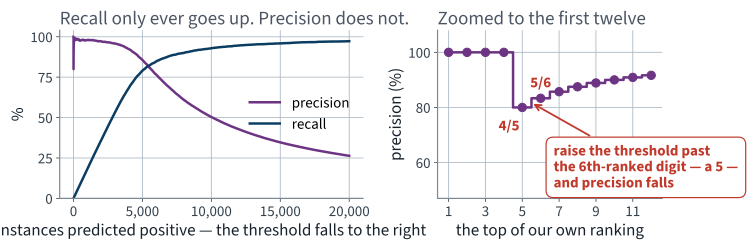
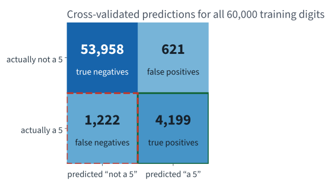
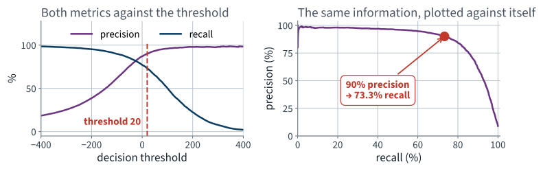
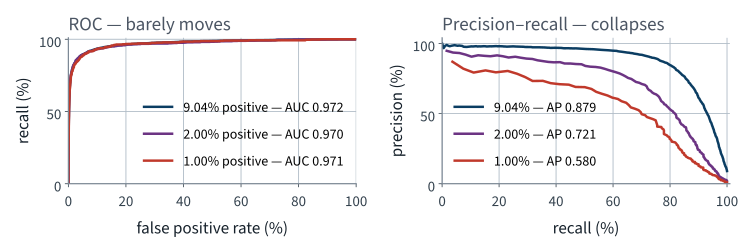

California housing, finished · MNIST, detecting one digit
Lecture 3Géron Ch. 2–3
Applications of Machine Learning
BSc Mathematics of Artificial Intelligence · Third year
Where we are
Last lecture, on the California housing data:
What we did
What it leaves for today
Sealed a stratified test set of 4,128 districts before looking at anything
a test set that must stay unused until the very end
Explored the 16,512 training districts, and warned against new features that are weighted sums of old ones
today shows why that warning is about linear algebra
Wrote least squares as minimising $\lVert\mathbf{X}\boldsymbol\theta - y\rVert_2^2$, and set its gradient to zero
the stationarity condition $\mathbf{X}^{\intercal}\mathbf{X}\hat{\boldsymbol\theta} = \mathbf{X}^{\intercal}y$, not yet solved
Proved the cost convex, so that stationary point is a global minimum
a minimum we now have to compute, and a model whose error we have to measure
Nothing has been fitted and nothing has been
scored yet. Today does both — and then asks what a score is worth on a
classification problem.
Today
Finishing the housing model — the normal
equation and when it breaks; why a training score means nothing;
leakage; holdout, $k$-fold cross-validation and pipelines; the test set,
used once
A classification task — detecting one digit in
MNIST, and a first detector with a headline accuracy
The mathematics — what a classifier that never
fires scores, and why precision is not monotone in the threshold
The method — the confusion matrix, precision,
recall and $F_1$, the threshold, PR against ROC, and a better model
Design exercise — a payments app’s real-time fraud
engine, in nine steps, with the pitfalls and how to address them
examinable
The normal equation and its invertibility condition; leakage and why
cross-validation needs a pipeline; the accuracy of the never-fires
classifier; precision, recall, $F_1$, PR and ROC.
When $\mathbf{X}^{\intercal}\mathbf{X}$ is singular
The normal equation needs $(\mathbf{X}^{\intercal}\mathbf{X})^{-1}$,
and it exists if and only if $\mathbf{X}$ has linearly independent columns.
Two ways to lose that:
More features than instances, $m < n+1$: then
$\operatorname{rank}(\mathbf{X}) \le m$, and infinitely many
$\boldsymbol\theta$ fit equally well
Collinear features: one column a linear combination of
others — exactly what a new feature built as a weighted sum of
existing ones is. Last lecture’s warning against such features was
this singularity
Near-collinear features leave the matrix invertible but
ill-conditioned: small changes in the data move $\hat{\boldsymbol\theta}$
a lot
What Scikit-Learn does instead
It computes $\hat{\boldsymbol\theta} = \mathbf{X}^{+}y$ with the
pseudoinverse $\mathbf{X}^{+} = \mathbf{V}\boldsymbol\Sigma^{+}\mathbf{U}^{\intercal}$
from the SVD, which is always defined: when the inverse does not exist it
returns the minimum-norm solution. The fitted values are still unique; the
coefficients are not.
examinable
Derive the normal equation; state and justify the invertibility condition.
Start with a number that means nothing
Fit an unconstrained decision tree on the 16,512 training districts, then
score it on those same 16,512 districts.
0.0
No error at all.
Two explanations. Only one of them is flattering.
“Then use the test set”
No — not yet.
We are still choosing between models and tuning them. Every time a choice is
made by looking at the test score, that score stops being an estimate of
performance on unseen data and becomes a target we are fitting to.
The test set is used once, at the very end, to estimate the
generalisation error of a system we have already committed to.
The next slide puts this argument as an exam question.
Answer 1 and 2 now; 3 and 4 need cross-validation, so they come once it
exists, at the end of this half.
The same error, one step earlier
A score can also be corrupted before any model is fitted:
scaler = StandardScaler()
housing_scaled = scaler.fit_transform(housing_full) # all 20,640 rows
train_set, test_set = train_test_split(housing_scaled) # then split
Data leakage — the condition
A quantity computed from rows outside the training set enters the training
path. Here the mean and standard deviation were computed from a set that
includes the test rows, so the model is evaluated on rows whose own values
helped define the transformation applied to them.
It raises no exception and the reported score improves. How
much it improves is not knowable from the code — sometimes
nothing, sometimes everything — which is why the rule is procedural
rather than a matter of judging each case.
The rule, stated once
Never violate this
Fit every transformer on the training set only. Never call
fit() or fit_transform() on the validation set, the
test set, or new data. Once fitted, you may transform() anything.
This applies to imputers, scalers, encoders, dimensionality
reduction — everything that learns anything from data.
We will not rely on remembering it. The next few slides
build an object that makes violating it structurally impossible.
Hold out a validation set
Split the training set again: a smaller training set,
and a validation set (also called the development set). Train
the candidates on the reduced set, select on the validation set, retrain the
winner on the full training set, and evaluate once on the test set.
Validation set too small
Evaluations are imprecise; you may select a suboptimal
model by chance.
Validation set too large
The remaining training set is much smaller than the full
one — like selecting a sprinter to run a marathon.
Solution: many small validation sets, used in rotation.
Every row is a complete, independent fit

Five fits to get one number — and a second
number, the spread, that a single holdout could never give you.
Linear regression, a decision tree and a random forest,
each scored by ten-fold cross-validation. All three spreads are around
±$2,000–$3,000
— and that is mostly which districts landed in the fold, not the
model. Any difference smaller than this is not a difference.
Pipelines make leakage structurally impossible
full_pipeline = Pipeline([
("prep", preprocessing), # imputer + scaler on numbers, one-hot on ocean_proximity
("model", RandomForestRegressor(random_state=42)),
])
When cross_val_score holds out fold $j$, the entire pipeline
— imputer, encoder, scaler, model — is fitted on the other folds only.
The transformers never see the held-out fold. Leakage cannot
occur by accident.
Finally: the test set
final_model = Pipeline([
("prep", preprocessing),
("model", RandomForestRegressor(n_estimators=200, max_features=8,
random_state=42)),
]).fit(X_train, y_train) # the training set, and only that
final_predictions = final_model.predict(X_test)
final_rmse = root_mean_squared_error(y_test, final_predictions)
$49,037
The forest’s two settings were chosen on
validation folds of the training set before this cell ran. We
predict on the test set; we never fit anything on
it, and we look at it once.
You have been hired again
A national postal operator sorts handwritten postcodes automatically. A
camera photographs each digit; a classifier reads it; the envelope goes down a
chute.
The task
Their audit team has found that one glyph is misread far more often than the
others. They want every scanned digit that is a
5 pulled off the line and sent to a human verification desk.
Not “read the digit”. Detect one
digit. Yes or no, one class against the other nine.
The data: MNIST
70,000 small images of handwritten digits, written by US high-school
students and Census Bureau employees
Each image is 28 × 28 pixels, flattened to 784
features
Each feature is one pixel’s intensity, an integer from 0 (white)
to 255 (black)
Every image is labelled with the digit it shows
The textbook calls MNIST “the hello world of machine learning”.
It is studied so often that it is effectively the field’s control
experiment: if a method cannot do something here, the something is probably
not the method’s fault.
From ten classes to two
y_train_5 = (y_train == 5) # True for every 5, False otherwise
y_test_5 = (y_test == 5)
assert y_train_5.dtype == bool
assert y_train_5.sum() == 5421
print(f"{y_train_5.sum():,} positives out of {len(y_train_5):,}")
Two lines, and the imbalance is created. Nothing about MNIST
is imbalanced; our question is.
Assert the count. OpenML delivers the labels as
strings, and a string never equals the integer 5: if they were not cast to
integers first, this assertion is what tells you — it fails at
0 == 5421 instead of silently training on nothing.
Balanced data, imbalanced question

Every bar is roughly the same height. The moment we ask
“is it a 5?”, one bar becomes the positive class and the other nine
become the negative class.
The obvious metric for a classifier
Accuracy: the fraction of instances the classifier gets
right.
Three-fold cross-validated accuracy of a linear classifier,
on data the model never saw during its own fitting.
Folds: 96.83%, 96.84%, 97.04%. A spread of about two tenths
of a point — the three folds agree. The scaler sits inside the
pipeline, so each fold refits it on its own training part.
Before you commit: what does nothing score?
The cheapest possible detector. It looks at nothing and
answers “not a 5” every time.
An identity, not an estimate — and at a base
rate of 1%, doing nothing scores 99%.
What the detector computes
Our classifier is linear. It scores a digit with
$s(x) = \boldsymbol\theta^{\intercal}\mathbf{x}$ on the scaled pixels
— regression’s function — and predicts “5”
when $s(x) \ge 0$.
clf.fit(X_train, y_train_5)
some_digit = X_train[0] # a training image that is a 5
score = clf.decision_function([some_digit]) # e.g. array([1231.4])
score >= 0 # array([ True]) — what predict() does
score >= 3000 # array([False]) — the same 5, missed
# one out-of-fold score per training digit, used from here on
y_scores = cross_val_predict(clf, X_train, y_train_5, cv=cv,
method="decision_function")
Regression reports the number; classification cuts it at a
threshold. predict() hides the number and hard-codes the
threshold at zero.
There is no set_threshold() method, and there
should not be. You compute the scores and you compare them yourself.
Recall is monotone; precision is not
Now let the threshold move: predict positive when
$s(x) \ge t$. Raising $t$
only ever removes instances from the flagged set, so
$\mathrm{TP}(t)$ and $\mathrm{FP}(t)$ can only fall. Recall divides
$\mathrm{TP}(t)$ by $P$, a constant of the data, so it can only fall too.
Here both the numerator and the denominator move, in the
same direction. A ratio of two decreasing quantities can do anything at
all.
The denominator is the size of the set we chose to flag. It is not
a property of the data; it is a property of our decision.
Both metrics, along our own ranking

The right-hand panel zooms in on the top of our own
ranking: the sixth-ranked digit is a 5, and raising the threshold past it
takes precision from 5/6 down to 4/5.
The same four numbers, laid out

1,237 fives went past unflagged —
22.8% of every 5 in the training set.
Reading a confusion matrix
Rows are the actual class; columns are the
predicted class
The diagonal is what went right; everything off it went wrong
A perfect classifier has zeros off the diagonal, and nothing else
Row 1 is the negatives: 53,957 correct, 622 false alarms
Row 2 is the positives: 1,237 missed, 4,184 caught
Both mistakes are visible, separately, and they are not the
same size or the same kind. Accuracy added them together and divided by
60,000.
Ours is 81.82%. The harmonic mean is pulled towards the
smaller of the two numbers it combines, so a high $F_1$ needs both precision
and recall to be high — one good number cannot carry a bad one.
You cannot have both
Raising recall lowers precision, and lowering recall raises it
— usually.
“Usually” is doing real work in that sentence, and
counting every step down our own ranking says exactly how much: precision
rises at 54,579 of the steps and falls at 5,417 of them. The trend is reliable; the individual step is
not.
The precision/recall trade-off
It is not a property of our model, or of SGD, or of MNIST. It is a property
of ranking instances and cutting the ranking somewhere.
The dial, and the curve it traces

Precision starts to fall off a cliff at about 80% recall.
Choose the operating point just before the cliff, not on it.
Choose the threshold deliberately
import numpy as np
flagged = recalls[:-1] * n_pos / precisions[:-1] # tp / precision = tp + fp
ok = (precisions[:-1] >= 0.90) & (flagged >= 500) # and enough flagged
idx = int(np.argmax(ok)) # first crossing WITH support
threshold_90 = thresholds[idx] # 20.09
y_pred_90 = (y_scores >= threshold_90)
print(precision_score(y_train_5, y_pred_90)) # 0.9001
print(recall_score(y_train_5, y_pred_90)) # 0.7333
argmax on a boolean array returns the first
True. The idiom is compact and it is not obvious; read it once
and remember it.
Ninety per cent precision costs us 3.86 points of recall,
from 77.18% down to 73.33%.
The ROC curve
Same sweep, different pair of axes: the true positive rate
against the false positive rate.
Note that both denominators are fixed by the
data. Neither axis moves when we change the threshold’s effect on the
flagged count — which is precisely why the ROC curve behaves so much
better than the PR curve, and why that is a warning rather than a
recommendation.
The rule
Prefer the precision/recall curve whenever the positive class is
rare, or whenever you care more about false positives than about
false negatives. Otherwise use the ROC curve.
The reason is arithmetic. FPR divides false positives by
$N$, which is huge when positives are rare, so a large number of false alarms
produces a small, comfortable-looking FPR. Precision divides the same false
positives by the flagged count, which is small.
Do not take that on trust. Measure it.
ROC on a rare positive class
Our scores, unchanged; only the positives are thinned, so
the base rate falls from 9.04% to 2% and then 1%.

Failure condition
Three indistinguishable ROC curves, three very different PR curves, from
one set of scores: the false-positive rate divides by the abundant class,
so ROC cannot see what a rare positive costs.
Part 1, on the housing data: the normal equation with the residual
checked orthogonal to every column, the training score of zero, ten-fold
cross-validation of three models inside one pipeline, and the single use
of the test set
Part 2, on MNIST: the never-fires baseline, the detector, the confusion
matrix, precision, recall and $F_1$, the curves, the threshold choice,
and the forest — with the never-fires accuracy checked against
$1-p$, and the non-monotonicity of precision checked at every one of
the 59,999 thresholds
What to change before the next lecture
Detect a different digit. Change one character — the 5 in
y_train == 5 — and re-run. The baseline moves, the
accuracy moves with it, and the pair tells you something neither does alone.
Design exercise · in the manner of an ML system-design interview
The task: a payments app’s real-time fraud engine
The brief
A payments app — a card in the customer’s phone — must
decide, in the fraction of a second between card and terminal, whether to
approve or decline the transaction, or push “was
this you?”. The company reimburses the fraud it approves, as
payment-services rules require, and loses the customer whose dinner it
declines; before going live it wants to know how many frauds it catches
and how many honest customers it turns away.
Given: the authorisation log — amount, merchant,
country, channel, time, the card’s recent history — and the
disputes customers raise in the app afterwards, which mark the
frauds
Scale: millions of transactions a day; fraud of the
order of one in a thousand
Consumers of the output: the authorisation service, the
fraud team that works the queue, and the customer who gets the push
Nine steps follow, each with the pitfall that catches a
first attempt and what to do about it. The model at the centre is
today’s: a classifier that produces a score, cut at a threshold chosen
on purpose, and read through precision and recall rather than accuracy.
Step 1 — Frame it: a rare positive, and what nothing scores
Binary detection: fraud against everything else. The positive class is
rare by construction, as every detector carved out of a larger
question is
Before any model, the classifier that never fires: it flags nothing,
and its accuracy is one minus the base rate — at one fraud in a
thousand, about ninety-nine point nine per cent
The metric is the pair precision and recall at the
operating point the product chooses, with the PR curve behind it;
accuracy is reported beside its anchor, never alone
Pitfall — why accuracy lies here
A first model reports accuracy in the high nineties and is approved, when
doing nothing scores higher — and a model that catches every fraud
while declining one honest customer in a hundred scores lower
than doing nothing. Quote the never-fires accuracy first, and judge every
model by how many frauds it catches at a precision the fraud team and
customers can afford.
Step 2 — The label arrives weeks later, from a dispute
No transaction is born labelled. A fraud becomes known when the
customer disputes it in the app and the fraud team confirms it
— days or weeks after the authorisation
A transaction with no dispute is “not fraud” only so far;
the newest rows in the log are the least trustworthy negatives
Write the definition down: fraud is a confirmed dispute within the
window; a refund for a faulty product is not; a fraud the customer
never notices is one the label will never show
Pitfall
The training set is cut from the newest rows of the log, for the
freshest data, and its labels are mostly unmatured:
frauds not yet disputed sit among the negatives, the model learns that
they are normal, and the quoted recall counts only the frauds that were
known by then. Label only transactions
older than the dispute window, record the date each label arrived, and
say in every report which frauds the recall counts.
Step 3 — Evaluate in the order the engine will face
The score must estimate performance on transactions that come
after the model is fitted: train on earlier months, validate
on the next, test on the one after, with a gap as long as the dispute
window
Folds are consecutive periods, each scored by a model fitted on the
periods before it; each period’s precision and recall are
reported, not only the mean
The test period is read once, after model and threshold are fixed
Pitfall
A shuffled $k$-fold puts a stolen card’s ten transactions of one
afternoon on both sides, and the model is scored on frauds whose siblings
it trained on: recall climbs, and on the first live day it falls back to
what an honest split would have shown.
Split by time, keep each card on one side, and treat the drop from the
shuffled score to the time-ordered one as the measurement it is.
Step 4 — Features as of the moment of authorisation
The transaction: amount, merchant category, country, channel, hour.
The card’s past: spend and count in the last hour and day, time
since the previous transaction, distance from it, whether the merchant
is new to the card
Scaled, inside the pipeline: the amount is in money and the count in
single digits, and the linear classifier is fitted by descent
A feature the authorisation service cannot compute in the time it
has is not a feature
Pitfall — leakage
“Transactions on this card today” is computed over the whole
day, so a row at noon knows about the evening; “the merchant’s
fraud rate” is computed over the whole log, test periods included,
with each row’s own label inside it; and the card’s
frozen flag, set by the fraud team after the fraud, is the
label in disguise. Compute every history feature from the past only, with
the code that will run at authorisation, and fit any rate inside the
pipeline on the training periods alone.
Step 5 — The model: a score, not a label
A linear classifier on the scaled features first: it scores a
transaction with $\boldsymbol\theta^{\intercal}\mathbf{x}$, and
predict() cuts at zero. Ask for
decision_function instead, out of fold
A forest as the challenger, on the same periods; its
predict_proba column is the score, and every curve works
unchanged
Compare the two on the row the brief is about — recall at the
affordable precision — not on accuracy, where the gain reads as
polish
Pitfall
The forest is scored on the transactions it was fitted on and reports no
error at all: an unconstrained tree isolates every row in its own leaf,
and a lookup has zero error. The number says nothing about next month.
Every score the team sees comes from a fit that never saw that period,
with the whole pipeline — scaler and model — refitted inside
each fold.
Step 6 — The threshold is a product decision, priced in both errors
Error
What it costs
False positive — an honest payment declined
an embarrassed customer, a card at the back of the wallet
False negative — a fraud approved
the amount, reimbursed by law, and a customer who learns from a statement
The fraud team can work a bounded number of cases a day,
so the flagged count is a constraint and the threshold is chosen on the
validation periods’ out-of-fold scores to meet it.
Pitfallpredict() ships with the cut at zero, a decision nobody
took, and “the first threshold that reaches the required
precision” can be one lucky step on a handful of flagged rows,
because precision is not monotone. State the constraint, take the first
threshold that reaches it with enough flagged transactions behind
it, and defend it as the product decision it is.
Step 7 — Evaluate on the curve that can see a rare positive
The PR curve and its average precision, per period; the recall
available at the required precision is the number the product
signs off
Reported per fold: each period’s precision and recall at the
chosen threshold, so that a quiet month and a fraud wave are both
visible, and a difference smaller than the spread is not a
difference
Pitfall — ROC on one fraud in a thousand
The ROC AUC is superb and goes on the slide. Its false-positive
rate divides the false alarms by the honest transactions, millions of
them, so a thousand declined customers a day is a rounding error on that
axis — and the same scores at three base rates draw one ROC curve
and three different PR curves. Prefer the PR curve whenever the
positive class is rare or false positives are the costly error; here both
hold.
Step 8 — In production: the engine chooses what gets labelled
A declined transaction has no outcome: the fraud never completes and
the honest customer never disputes, so a decline yields no label for
the next model
The fraud team works the flagged queue, so confirmed frauds
concentrate where the engine looked; the ones it misses are found
only when the customer notices
Fraud adapts to the rule, so the base rate, merchants and amounts
drift; the fraud team is on call for the decline rate
Pitfall
The next model is trained on last quarter’s log, where the previous
engine decided which rows carry a label, and its recall is measured
against the frauds caught, not the frauds that happened. Keep a small
random sample approved and audited regardless of score, measure recall on it, stage each new model on a
share of traffic, retrain on a schedule with matured labels, and
re-choose the threshold when the base rate moves.
Step 9 — Ship it: the pipeline, and the pitfalls in one table
Log → matured labels from confirmed disputes →
split by time, each card on one side, a gap → as-of features, scaled
in the pipeline → out-of-fold scores, linear and forest →
threshold chosen on capacity and both costs → precision and recall per
period, PR not ROC → audited random sample, retraining, threshold
re-chosen → the test period once.
Pitfall
Address it by
Accuracy on a rare positive
the never-fires anchor; precision and recall at the point
Unmatured labels
labelling after the dispute window; label dates recorded
A shuffled split
consecutive periods, each card on one side, a gap
Features that see the future, or the label
as-of computation; rates fitted inside the pipeline
A score from the rows the model was fitted on
out-of-fold scores; the whole pipeline refitted per fold
A threshold nobody chose
costs and capacity stated; chosen on validation, with support
ROC AUC on one in a thousand
the PR curve; recall at the required precision, per period
Labels only where it looked
a random audited sample; staged rollout; threshold re-chosen
What we did
Solved least squares in closed form,
$\hat{\boldsymbol\theta} = (\mathbf{X}^{\intercal}\mathbf{X})^{-1}\mathbf{X}^{\intercal}y$,
read it as an orthogonal projection, and saw that it breaks when the
columns of $\mathbf{X}$ are dependent — which the SVD pseudoinverse
survives
Saw a training error of zero mean nothing, and a leak improve a score
silently: every transformer is fitted on training data only, and a
Pipeline inside cross-validation enforces it
Measured with $k$-fold cross-validation, reported the fold spread with
the mean, and touched the test set once
Framed a detection task as binary classification: the positive class is
rare by construction, and the classifier that never fires scores exactly
$1-p$
Showed that recall is monotone in the threshold and precision is not
Read the confusion matrix, used precision, recall and $F_1$, chose a
threshold deliberately, and preferred the PR curve to ROC because the
positives are rare
Designed the real-time fraud engine behind a payments app in nine
steps — the never-fires anchor, labels that mature from disputes,
a split by time, as-of features, out-of-fold scores, a threshold
priced in both errors, the PR curve on a rare positive, and a random
audited sample against the engine’s own feedback — each
step named for the pitfall it avoids
Not presented — for afterwards
Exercises Lecture 3
five, in the style of the written paper
Exercises — Lecture 3
The normal equation is $\hat\theta = (X^{\mathsf T}X)^{-1}X^{\mathsf T}y$. Your training matrix $X$ has a column equal to the sum of two others. State what happens to $X^{\mathsf T}X$, and what the pseudoinverse $X^{+}$ returns instead. [5]
A pipeline scales the features and then fits a model, and is passed whole to cross_val_score. Explain what would go wrong if the scaling were done once, before the call. [5]
On the MNIST 5-detector, a classifier that never fires scores $90.96\%$ accuracy on the training set. State what that number is a measurement of. [3]
Solutions on Lecture 4’s deck.
Exercises — Lecture 3 (continued)
Prove or disprove: as the decision threshold is lowered, precision increases monotonically. [5]
Two models have the same ROC AUC. One is far better on a precision–recall curve. What does that tell you about the problem? [4]
Solutions on Lecture 4’s deck.
The five set at the end of Lecture 2
Solutions Lecture 2
not part of this lecture
Solutions — Lecture 2
1. A colleague reports their model’s error on the California housing test set, and says they chose the…
It estimates the best-of-several error on that particular test set; it is not an estimate of the generalisation error, the error on new districts.
Choosing the minimum of several numbers measured on the same data makes that minimum a selection, not a measurement
This is data snooping: the test set picked the model, so its error is an optimistic estimate of generalisation error, which needs data that took part in no choice
2. You are given a stratified split on income category and a naive random split of the same data. A model scored…
No.
A similar error on one draw says nothing about the spread over draws, and the stratification is there to reduce that spread
The failure a naive split risks is sampling bias — measured here as up to 6.4% off in the income mix, against 0.36% stratified — and a single comparison of errors cannot show it
Solutions — Lecture 2 (2)
3. On the training set, longitude has a correlation of $r = -0.05$ with the median house value. A colleague…
$r$ measures only a linear relationship, and price depends on location non-linearly. The geographic scatter coloured by price refutes it.
$r \approx 0$ rules out a straight-line trend in longitude alone, not dependence
Prices are highest along the coast and around the two big metropolitan areas, a pattern no single coordinate traces as a straight line
4. The course reports the RMSE of a regression model, yet training minimises the MSE. Explain why the two give…
The square root is strictly increasing on $[0, \infty)$, so $\arg\min \sqrt{f} = \arg\min f$. The RMSE is reported because it is in the units of the target, dollars.
A strictly increasing function preserves the order of the values, so it preserves where the minimum is
Minimising the MSE avoids differentiating a square root: same minimiser, simpler algebra
Solutions — Lecture 2 (3)
5. The Hessian of the MSE of a linear model is $\tfrac{2}{m}\mathbf{X}^{\intercal}\mathbf{X}$. Show that it is…
For any $\mathbf{v}$, $\mathbf{v}^{\intercal}\mathbf{X}^{\intercal}\mathbf{X}\mathbf{v} = \lVert \mathbf{X}\mathbf{v}\rVert_2^2 \ge 0$. So the MSE is convex, and any stationary point is a global minimum.
The quadratic form is a squared norm, so it cannot be negative, whatever $\mathbf{X}$ is
A convex function has no local minima other than the global one, so setting the gradient to zero finds the minimum
Lecture 4 · Géron Ch. 4
Training models
Gradient descent, derived — the update rule, the step size, why the
features must be scaled, and one instance at a time
Logistic regression on the Titanic passengers: a probability, not a label,
and coefficients read as log-odds
Calibration, and softmax regression for more than two classes